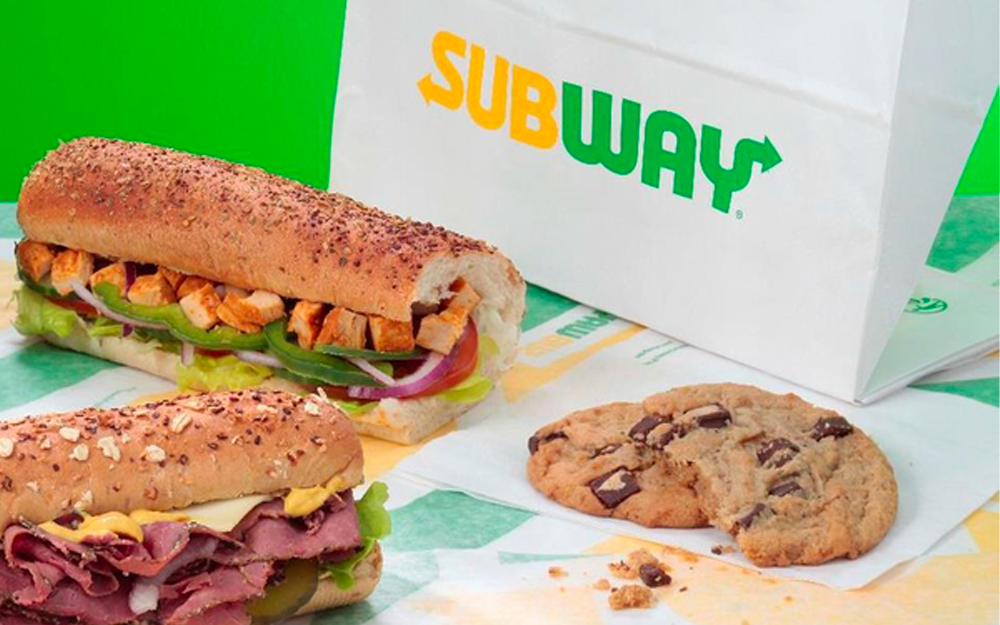

You cook !
In the fast food industry, the choice is great. Between burger, tacos, sushi ... the big brands are fighting to have the most loyal customers. Founded in 1965 in Connecticut, the Subway sandwich chain has established itself among the giants of fast food. An innovative concept, being able to create a sandwich with the foods of your choice. After 6 months in their ranks, I will share with you what is behind the doors of these made-to-measure sandwiches.

Eat Fresh !
Behind this slogan are limits. The products offered to customers are divided into two categories: fresh and frozen products. 60% of the products offered are prepared on site, in the kitchens, especially vegetables. Between peppers and onions, passing through the classic salad or juicy tomato, these fresh vegetables are prepared on site in the morning or early afternoon, in order to keep the customer optimal freshness. Among these vegetables only three do not have this privilege: olives, pickles and peppers. These are brought in gray bags and are placed directly on the display. The remaining 40% are meats and breads. The breads are delivered in cartons in the form of frozen baguettes, which will then be "topped", that is to say covered with various seeds in order to allow a variety of breads. Meats, on the other hand, are mostly packaged and only need to wait for their thawing. Only Teriyaki chicken and tuna require light preparation before being offered. Behind these foods, the "sandwich artists", the honorary title given to restaurant staff.
Beyond these foods: "sandwich artists", the honorary title awarded to restaurant staff.
From preparation to transaction, including design, the role of a versatile team member is similar. Each of my colleagues and I have received the same training. The optimal techniques for cutting the products, the baking times of the breads and cookies, and even the precise quantities that we must respect in each realization: everything is millimetered and orchestrated in a military way. The obligatory dress code consists of a T-shirt with the effigy of the company, the apron adorned with an "S" of Subway and the visor (as well as a cap for long hair and a mask. during Covid-19), all in the emblematic color of the sign. When designing meals, gloves are mandatory. Gloves are changed between each customer (2 Max) as well as the knives (to cut the sandwiches in half as well as the preparations). Indeed, according to the choice of the customer (meat, fish or vegetarian products) the blades differ. Finally, hygiene measures are an essential and mandatory point in restaurants, hand washing, the cleanliness of compartments for food and dishes. Everything is cleaned thoroughly by hand and checked before being made available.
If the freshness of our sandwiches or the delicious sauce of our Chicken Teriyaki has made you want, what are you waiting for to come and enjoy a sandwich that suits you?